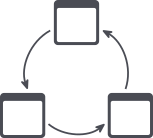
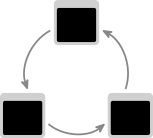
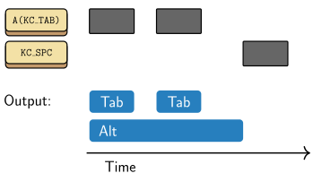
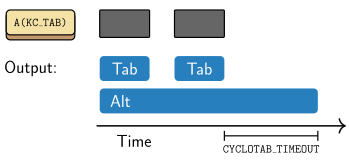
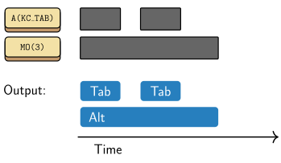
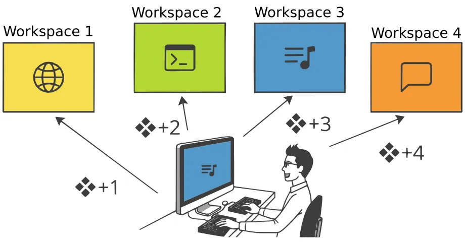

Cyclotab
Pascal Getreuer, 2025-03-17


Overview
Cyclotab is a QMK community module for more conveniently invoking Alt+Tab and other hotkeys of the same form (⌘+Tab, etc.).
For keyboard-driven window management, Alt+Tab is a frequently used hotkey, or ⌘+Tab for Mac users. This hotkey is ergonomically objectionable in that you continue to hold Alt while tapping Tab possibly multiple times, or for even more finger gymnastics, holding Shift+Alt and tapping Tab to cycle in the reverse direction. On a programmable keyboard, you might perform window management on a secondary layer, meaning you are holding a layer switch key in addition to these hotkey chords.
Cyclotab aims to make Alt+Tabbing easier. There are other implementations for similar behavior; this is my take on a “swapper.” What’s attractive about Cyclotab is it’s comparatively little fuss to install and usable in multiple ways.
Add Cyclotab to your keymap
Step 1. Install my community modules. Then
enable module getreuer/cyclotab
in your keymap.json file. Or if keymap.json
does not exist, create it with the following content:
{
"modules": ["getreuer/cyclotab"]
}Step 2. By default, Cyclotab is configured for the
Alt+Tab hotkey, activated by keycodes A(KC_TAB) (Alt+Tab)
and S(A(KC_TAB)) (Shift+Alt+Tab). Use one or both of these
keycodes somewhere in your keymap. Other possible configurations are described below.
📝 Note
Pressing KC_TAB while holding KC_LALT does
not activate Cyclotab, even though that composes to Alt+Tab. Cyclotab
listens specifically for A(KC_TAB) and
S(A(KC_TAB)).
How to use Cyclotab
There are several practical ways to use Cyclotab. Here are some recipes.
Base layer use: Assign A(KC_TAB) to a
key or combo on your base layer. Use it like:
Tap A(KC_TAB) (and/or S(A(KC_TAB))) to activate. Even after the key is released, Cyclotab continues to hold the Alt mod for a second, allowing for multiple taps to navigate among windows.
To complete the selection and release the Alt mod, press or release any other key such as Space. This key is “consumed” and not sent to the computer, e.g. so that a space is not inadvertently typed when switching to your terminal.

Alternatively, Alt is released automatically after a configurable timeout.

Use on a layer: You can use release of a layer
switch to signal completion. Assign A(KC_TAB) to a key on a
layer above the base layer, say, layer 3. Then:
Hold MO(3) (or another held layer switch) to switch to layer 3.
Tap A(KC_TAB) (and/or S(A(KC_TAB))) any number of times.
Releasing MO(3) has the effect of releasing Alt immediately.

The Alt mod is released the instant the layer is exited. You might prefer this over waiting for the timeout. Note, Cyclotab still times out by default even when used on a secondary layer. If you don’t want that, timeout may be disabled.
Use with Repeat Key: Assign A(KC_TAB)
to a key or combo and the Repeat Key
QK_REP on the same layer. Use them like:
- Tap A(KC_TAB) (and/or S(A(KC_TAB))).
- Tap QK_REP to effectively send
A(KC_TAB)any number of times. - Press another key or wait for the timeout to complete the selection.
You can also use the Alternate
Repeat Key QK_AREP to send S(A(KC_TAB)),
enabling navigation in both directions. To do that, configure
S(A(KC_TAB)) to be the alternate of A(KC_TAB)
by adding in keymap.c:
uint16_t get_alt_repeat_key_keycode_user(uint16_t keycode, uint8_t mods) {
switch (keycode) {
case A(KC_TAB): return S(A(KC_TAB));
// Alternates for other keys...
}
return KC_TRNS;
}With arrow keys, Shift, Escape: A few keys are specially handled while Cyclotab is active. These may be incorporated in any of the above recipes:
Arrow keys may be used. Depending on the window manager, this may work as an alternative to (Shift+)Alt+Tab for menu nagivation.
Shift keys may be used to navigate in the reverse direction.
KC_LSFT,KC_RSFT, one-shot Shifts, and mod-tap Shift keys are supported.Tapping Escape sends Escape before releasing mods. Depending on the window manager, this cancels switching windows.
Customization
Other Alt-Tab-like hotkeys
Cyclotab handles Alt+Tab (and Shift+Alt+Tab) by default. To handle
other hotkeys, define CYCLOTAB_KEYS in your config.h. For
instance to handle (Shift+)⌘+Tab instead, use:
// Handle Command+Tab.
#define CYCLOTAB_KEYS LCMD(KC_TAB)Comma-separated keycodes may be listed to handle multiple hotkeys (and here too, the Shifted versions of these hotkeys are handled as well):
// Handle Command+Tab and Command+Grave
#define CYCLOTAB_KEYS LCMD(KC_TAB), LCMD(KC_GRAVE)Generally, a hotkey is a modifier + basic
keycode combination like A(KC_TAB) or
LCMD(KC_GRAVE) (aka equivalently
LGUI(KC_GRAVE) or G(KC_GRV)).
Timeout
By default, Cyclotab times out and releases held mods after 1000 ms
(1 second). Define CYCLOTAB_TIMEOUT in your config.h to set
a different value in units of milliseconds:
#define CYCLOTAB_TIMEOUT 2500 // 2.5 seconds.Disabling timeout: Setting a value of 0
disables timeout, in which case mods are then held indefinitely until
another key is pressed or released.
#define CYCLOTAB_TIMEOUT 0 // Disable timeout.For per-key control of the timeout, define
cyclotab_timeout() in your keymap.c. The
keycode argument is the hotkey keycode, allowing for
different timeouts for different hotkeys. Example:
uint16_t cyclotab_timeout(uint16_t keycode) {
switch (keycode) {
case A(KC_TAB):
return 2500; // Timeout of 2.5 seconds for Alt+Tab.
case A(KC_GRAVE):
return 0; // Disable timeout for Alt+`.
default:
return 1000; // Timeout of 1.0 seconds otherwise.
}
}📝 Note
If you define both CYCLOTAB_TIMEOUT and
cyclotab_timeout(), the latter takes precedence.
Other implementations
Besides Cyclotab, there are other implementations for similar behavior:
The QMK documentation includes a “Super ALT↯TAB” example, a simple single-key alt-tabbing implementation where Alt releases after a timeout.
Callum Oakley’s swapper is a single-key alt-tabbing implementation where Alt releases when any other key is pressed. Additionally, Alt and Tab are parameterized.
For ZMK, caksoylar/zmk-smart-toggle implements a behavior to automatically toggle a key off when exiting a layer.
For ZMK, Nick Conway’s swapper is a PR for another swapper implementation.
Further thoughts on window management
The standard Alt+Tab switcher is a recency-based stack. The presented order of the windows changes dynamically according to which window was most recently focused. The constant shifting of the menu makes it challenging to leverage muscle memory.
Here is a better way to switch among windows:
- Use multiple virtual workspaces/desktops.
- For your most heavily used applications, assign each one a dedicated workspace.
- Configure hotkeys GUI+n, n = 1, 2, …, to jump to the nth workspace (also convenient: Shift+GUI+n to move the current window to the nth workspace).
That’s how I do the bulk of my window management. This is a common pattern with tiled window managers, though the essential idea does not require tiling.

The idea is a given application is always on a specific workspace, and it is the only window on that workspace, like workspace 1 = web browser, 2 = terminal, 3 = music player, etc. This stable one-to-one relationship promotes muscle memory. I simply think “music player” and muscle memory types GUI+3 to take me there. Of course, this relies on consistently placing the music player on workspace 3.
Most modern OSs / window managers support virtual workspaces. Configuring “jump to nth workspace” hotkeys can be done as follows:
On Windows: widavies/WinJump or an AutoHotkey script.
On Mac: Go to Keyboard → Keyboard Shortcuts → Mission Control and enable the “Switch to Desktop” hotkeys.
On Linux: Look for “keyboard shortcuts” under system settings, or refer to your window manager’s documentation.
Around 4 to 10 workspaces is a practical number. I’d say minimally 4 are needed to organize the chaos, and on the other extreme, I lose track of which workspace I put things when approaching 10 workspaces. The one-window-per-workspace rule need not be followed rigorously, and I bend that rule for lesser-used windows. Cyclotab is useful where workspaces are messier. It’s a blissful way to do keyboard-driven multitasking.